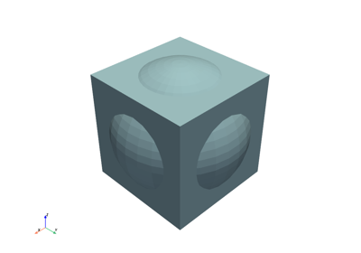
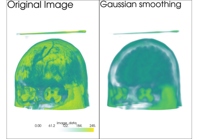
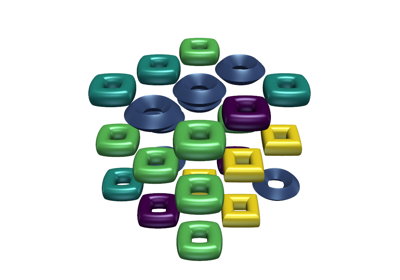
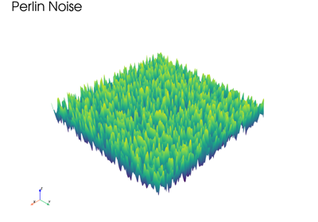
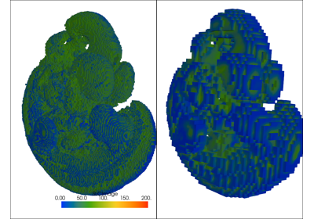

Filtering#
These examples show case various mesh analysis and filtering routines present in the Filters module. Explore these demos to perform tasks such as:
Slicing and cutting meshes
Computing mesh properties like volume, area, and surface normals
Mesh decimation
Extract regions of one mesh using another mesh's surface
Ray tracing through surface meshes
Resampling and interpolating scalar/vector values across meshes
Integrating a vector field to generate streamlines
Smoothing surfaces

Boolean Operations



Gaussian Smoothing



Table of Glyphs


Fast Fourier Transform with Perlin Noise
Fast Fourier Transform with Perlin Noise



Resampling